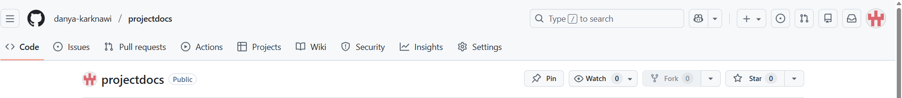

Aanleren van HTML-basis en online publiceren van code
In de vijfde week heb ik mij gericht op het leren van de basis van HTML en het online publiceren van mijn code. In het begin verliep dit niet vlot, omdat ik nog weinig ervaring had met programmeren en het schrijven van code. Het begrijpen van de structuur van HTML en de verschillende elementen vroeg tijd, en ik merkte dat ik in het begin moeite had om alles te volgen. Door veel te oefenen, voorbeelden te bekijken en mijn code stap voor stap te testen, begon ik het proces steeds beter te begrijpen. Gaandeweg raakte ik meer mee met de leerstof en kreeg ik meer inzicht in hoe HTML werkt en hoe een webpagina is opgebouwd. Dit zorgde ervoor dat ik met meer vertrouwen aan mijn code kon werken. Ik leerde hoe een HTML-document correct is opgebouwd, met een duidelijke scheiding tussen het head- en body-gedeelte. Daarnaast oefende ik met basiselementen zoals titels, paragrafen, lijsten, afbeeldingen en links. Door kleine aanpassingen te maken en het resultaat meteen in de browser te bekijken, kon ik beter begrijpen wat elke wijziging deed. Na het aanleren van de HTML-basis ben ik gestart met het online publiceren van mijn project. Hiervoor gebruikte ik GitHub, waar ik een repository aanmaakte en mijn bestanden uploadde. Ik leerde hoe ik mijn code kon bijwerken en organiseren, zodat alles overzichtelijk bleef. Vervolgens koppelde ik mijn GitHub-repository aan Netlify, waardoor mijn project online zichtbaar werd. Wanneer ik wijzigingen aanbracht in mijn code en deze opnieuw uploadde naar GitHub, werden deze automatisch bijgewerkt op de live website. Toen ik eenmaal mee was met de leerstof en mijn project online stond, ben ik ook begonnen aan mijn procesdocument. Hierin beschreef ik stap voor stap wat ik had gedaan, welke moeilijkheden ik tegenkwam en hoe ik deze heb opgelost. Dit hielp mij om terug te blikken op mijn leerproces en alles overzichtelijk te documenteren. Deze week gaf mij meer zelfvertrouwen in het werken met HTML en het bijhouden van mijn eigen proces.
